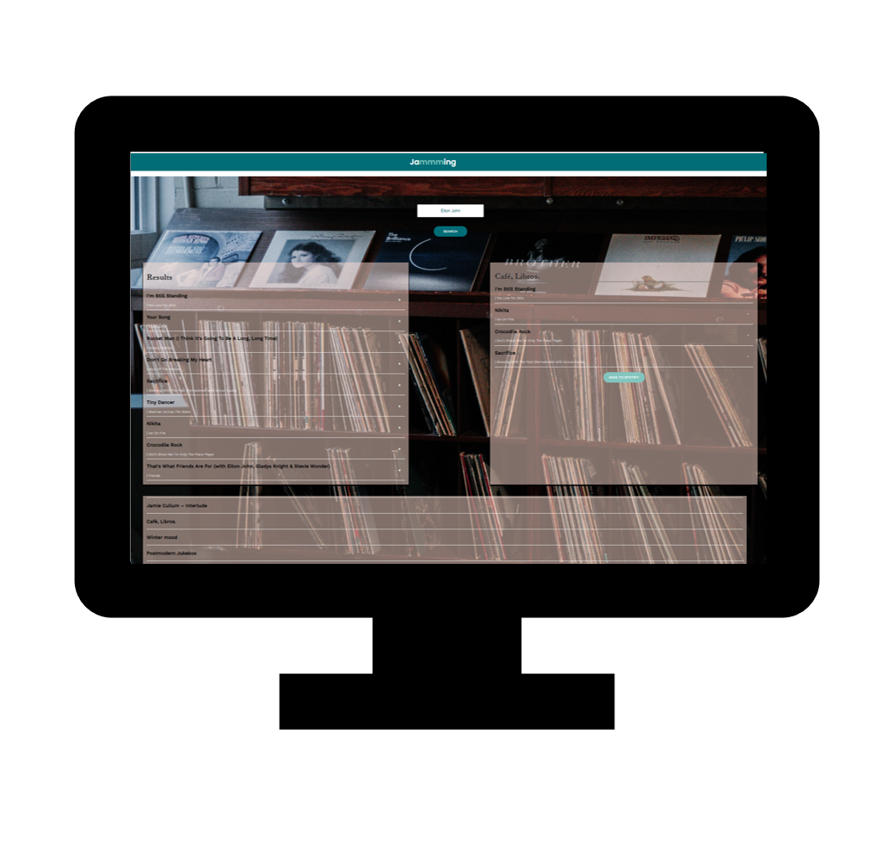

In this project, I have built a React web application called Jammming which uses the Spotify API to allow users to search their own Spotify library, create a custom playlist, save it to their Spotify account or add new songs to already existing playlists.